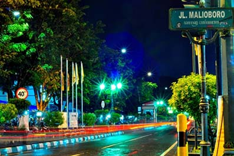

Wisata Malioboro

Jalan Malioboro adalah nama salah satu kawasan jalan dari tiga jalan di Kota Yogyakarta yang membentang dari Tugu Yogyakarta hingga ke perempatan Kantor Pos Yogyakarta. Secara keseluruhan terdiri dari Jalan Margo Utomo, Jalan Malioboro, dan Jalan Margo Mulyo. Jalan ini merupakan poros Garis Imajiner Kraton Yogyakarta. Terdapat beberapa objek bersejarah di kawasan tiga jalan ini antara lain Tugu Yogyakarta, Stasiun Tugu, Gedung Agung, Pasar Beringharjo, Benteng Vredeburg, dan Monumen Serangan Oemoem 1 Maret. Jalan Malioboro sangat terkenal dengan para pedagang kaki lima yang menjajakan kerajinan khas Jogja dan warung-warung lesehan di malam hari yang menjual makanan gudeg Jogja serta terkenal sebagai tempat berkumpulnya para seniman yang sering mengekpresikan kemampuan mereka seperti bermain musik, melukis, hapening art, pantomim, dan lain-lain di sepanjang jalan ini.
Di Malioboro anda dapat menemukan pernak - pernik khas Jogja yang bisa dijadikan untuk oleh - oleh keluarga, sahabat maupun orang - orang di sekitar kita. Ketika anda berbelanja disini, jangan ragu untuk menawar harga barang - barang yang akan anda beli, karena kita bisa mendapatkan harga yang murah dengan kualitas mantap. Para pedagang di sekitar Malioboro juga ramah - ramah, jadi jangan takut untuk sekedar melihat ataupun menanyakan harga barang. Untuk anda yang ingin merasakan makanan cita rasa khas Jogja, Malioboro juga dapat dijadikan tempat referensi untuk anda.
Untuk anda yang ingin pergi ke malioboro, ada beberapa alternatif yang bisa anda gunakan. Anda dapat berjalan kaki dari stasiun lempuyangan, jaraknya kira - kira 600 meter. Tetapi jika anda lelah dan takut nyasar, alternatifnya bisa memanfaatkan jasa becak atau andong. Kalau Anda perginya berdua bisa sewa becak, tapi kalau berempat atau berlima bisa menyewa Andong Malioboro. Adapun tarif rata rata dari Stasiun Lempuyangan ke Malioboro Naik Becak biasanya Rp.10.000, Naik Andong biasanya Rp.20.000.
ABg Trans menawarkan kemudahan bagi anda yang ingin berbelanja di Malioboro, dengan layanan FREE DELIVERY anda akan lebih mudah dan lebih cepat untuk sampai ke malioboro, dengan harga mulai dari Rp. 60.000,00 anda bisa puas berlibur di Jogja. Jangan ragu untuk bertanya dan menggunakan jasa kami, karena kami mengutamakan kepuasan, keamanan dan kenyamanan pelanggan.
Jalan - Jalan ke Jogja, ABg Trans Aja !!!
Hubungi :
Telp. : 0856-4162-6783 | 0812-2661-2355
WA : 0877-3825-1191 | 0858-7624-4840
BBM : 553db3e7 | D0DE903F
IG : @abg_trans
Line : sewamotordijogja
FB : Rental Motor Jogja AB'Gtrans